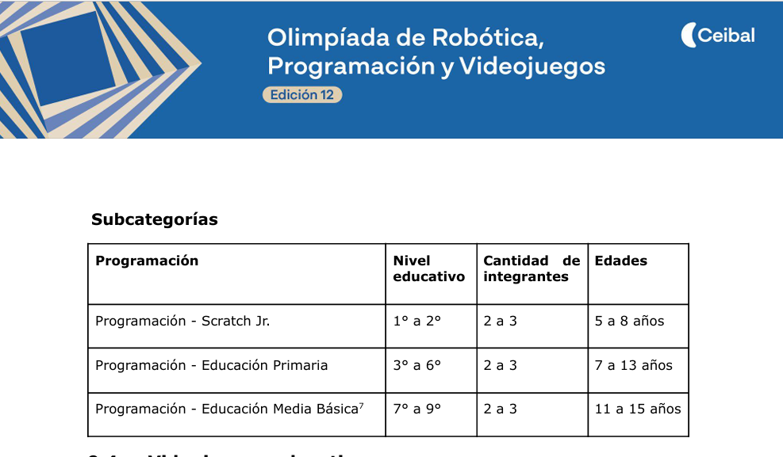
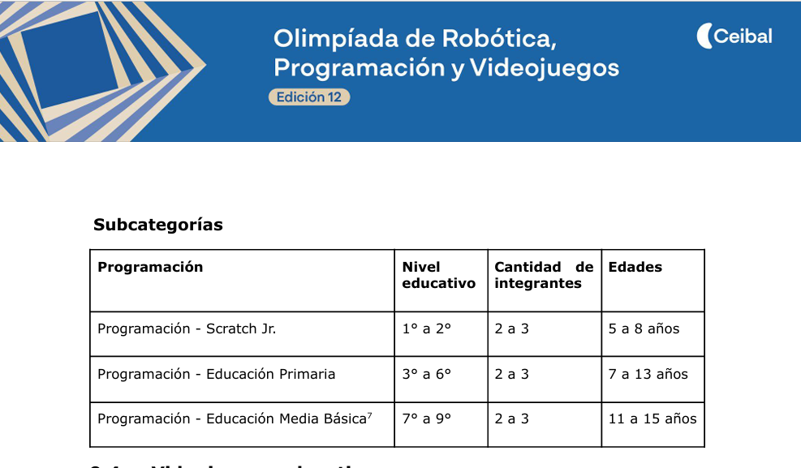

Galería del Proyecto
Aquí documentamos visualmente todo el proceso de desarrollo, desde las primeras ideas hasta la presentación final. Cada imagen y video cuenta una parte importante de nuestra historia.
📋 Etapa de Planificación
Las primeras reuniones, lluvia de ideas y definición del proyecto.
Reuniones de equipo
Documentación inicial
 

⚙️ Etapa de Desarrollo
El trabajo en acción: programación, diseño y construcción del prototipo.
Proceso de desarrollo
Video del proceso de desarrollo
🎯 Presentación Final
El gran momento: presentación del proyecto terminado.
Día de la presentación
TimelapseVideo de la presentación completa
Grabación completa de la presentación final del proyecto
⭐ Momentos Destacados
Los mejores momentos y logros durante el desarrollo del proyecto.
💭 Reflexión Visual
Esta galería representa no solo el resultado final, sino todo el camino recorrido. Cada imagen cuenta una historia de aprendizaje, colaboración y crecimiento. Ver todo el proceso documentado nos ayuda a valorar el esfuerzo y la dedicación invertidos en este proyecto.